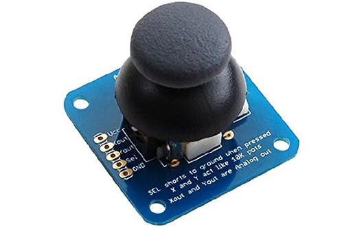
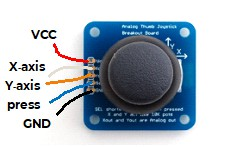
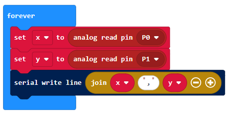
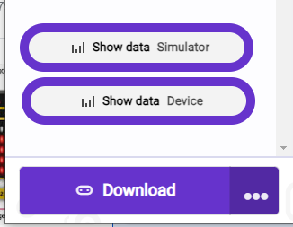
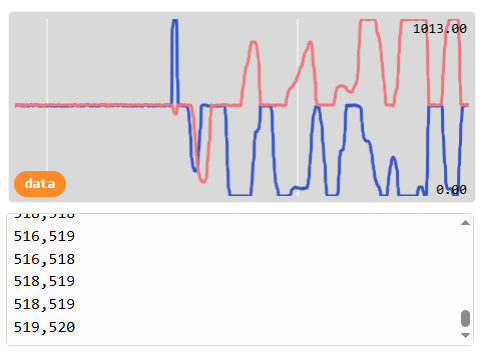

Joystick
A joystick generally provides two analogue inputs, representing the x and y axes. Use it to build a remote control for a robot or game and much more!

Wiring
Most joysticks work in the same way. There are power inputs (GND and 3V) and analgoue inputs for the x and y axes. Some joysticks also have a button that you can press, and this is read through an additional digital joystick.
Wire up as follows, using the Edge Connector or Motor Controller board:
| Joystick | Microbit |
|---|---|
| VCC | 3V |
| GND | GND |
| X-axis | P0 (or another analogue pin) |
| Y-axis | P1 (or another analogue pin) |
| press | P8 (or another digital pin) |

You don't have to use pins P0 and P1. You can use any analogue pins for the x and y axes. Just remember to adjust your code accordingly.
Coding
Enter this code in forever:

The Serial blocks can be found in Advanced.
Download the code to the microbit.
To see the data, click on Show data Device:

You should see some pairs of numbers and a graph. Eacy pair shows the x and y axis value, which generally range from -1023 to +1023. Push the joystick in different directions and watch the values change:

You can use these values to control other things. For example, you could use the y axis to control the speed of a robot and the x axis to control the left-right movement.